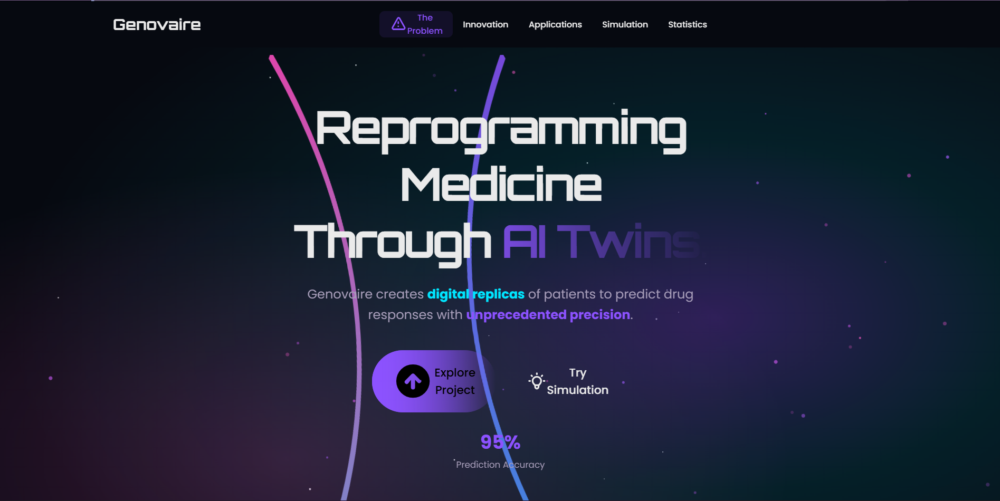
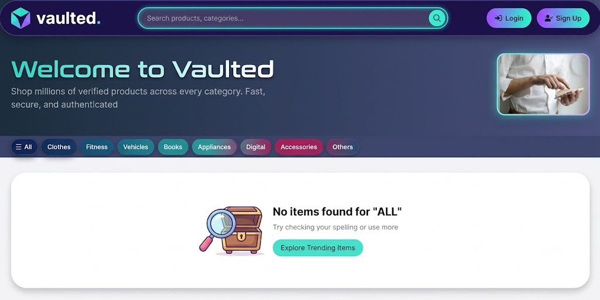
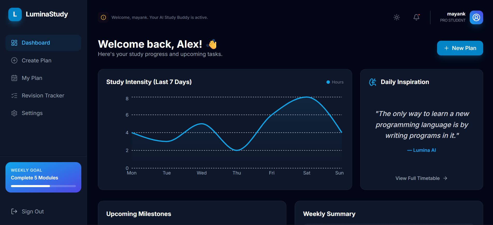

Hi Everyone, Mayank Sharma here, I am from Himachal Pradesh currently in First Year, B.Tech in CSE. I am a curious person who loves learning new things, working with others and exploring creative hobbies like coding, robotics and AI. I always approach challenges with an open mind and keep building new skills. I spend most of my time working on projects. Here are few of the projects I have built.


